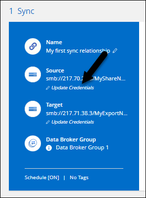

릴리스 정보
릴리스 정보
BlueXP 복사 및 동기화의 새로운 기능
 변경 제안
변경 제안
BlueXP 복사 및 동기화의 새로운 기능에 대해 알아보십시오.
2024년 2월 11일
2023년 11월 26일
Azure Blob을 위한 콜드 스토리지 클래스 지원
이제 동기화 관계를 생성할 때 콜드 스토리지 Azure Blob 계층을 사용할 수 있습니다.
AWS 데이터 브로커에서 Tel Aviv 지역 지원
Tel Aviv는 이제 AWS에서 데이터 브로커를 생성할 때 지원되는 지역이 되었습니다.
데이터 브로커용 노드 버전으로 업데이트
모든 새로운 데이터 브로커는 이제 노드 버전 21.2.0을 사용합니다. CentOS 7.0 및 Ubuntu Server 18.0과 같이 이 업데이트와 호환되지 않는 데이터 브로커는 더 이상 BlueXP 복사본 및 동기화를 수행할 수 없습니다.
2023년 9월 3일
Azure 데이터 브로커를 생성할 때 S3 키를 추가합니다
이제 Azure 데이터 브로커를 생성할 때 사용자가 AWS S3 액세스 키와 비밀 키를 추가할 수 있습니다.
2023년 8월 6일
데이터 브로커를 생성할 때 기존 Azure 보안 그룹을 사용합니다
이제 사용자는 데이터 브로커를 생성할 때 기존 Azure 보안 그룹을 사용할 수 있습니다.
데이터 브로커를 생성할 때 사용되는 서비스 계정에는 다음 권한이 있어야 합니다.
-
"Microsoft.Network/networkSecurityGroups/securityRules/read" 참조하십시오
-
"Microsoft.Network/networkSecurityGroups/read" 참조하십시오
Google 스토리지로 동기화할 때 데이터를 암호화합니다
이제 사용자는 Google Storage 버킷과 타겟의 동기화 관계를 생성할 때 고객이 관리하는 암호화 키를 지정할 수 있습니다. 수동으로 키를 입력하거나 단일 영역의 키 목록에서 선택할 수 있습니다.
데이터 브로커를 생성할 때 사용되는 서비스 계정에는 다음 권한이 있어야 합니다.
-
cloudkms.cryptoKeys.list 를 참조하십시오
-
cloudkms.keyRings.list 를 클릭합니다
2023년 7월 9일
한 번에 여러 동기화 관계를 제거합니다
이제 사용자는 UI에서 한 번에 둘 이상의 동기화 관계를 삭제할 수 있습니다.
ACL만 복사합니다
사용자는 이제 CIF 및 NFS 관계에서 ACL 정보를 복사하기 위한 추가 옵션을 사용할 수 있습니다. 동기화 관계를 생성하거나 관리할 때 파일만 복사하거나 ACL 정보만 복사하거나 파일과 ACL 정보를 복사할 수 있습니다.
Node.js 20으로 업데이트
복사 및 동기화가 Node.js 20으로 업데이트되었습니다. 사용 가능한 모든 데이터 브로커가 업데이트됩니다. 이 업데이트와 호환되지 않는 운영 체제는 설치할 수 없으며 호환되지 않는 기존 시스템에 성능 문제가 발생할 수 있습니다.
2023년 6월 11일
분 단위로 자동 중단을 지원합니다
아직 완료되지 않은 활성 동기화는 이제 * 동기화 시간 초과 * 기능을 사용하여 15분 후에 중단할 수 있습니다.
복사 액세스 시간 메타데이터
파일 시스템을 포함한 관계에서 * Copy for Objects * 기능은 이제 액세스 시간 메타데이터를 복사합니다.
2023년 5월 8일
보안 NFS 관계에서 데이터 브로커를 위한 사용자 인증서를 추가할 수 있습니다
이제 사용자는 보안 NFS 관계를 생성할 때 타겟 데이터 브로커에 대한 자체 인증서를 설정할 수 있습니다. 서버 이름을 설정하고 개인 키와 인증서 ID를 제공해야 합니다. 이 기능은 모든 데이터 브로커에 사용할 수 있습니다.
최근 수정된 파일의 제외 기간이 연장되었습니다
이제 사용자는 예약된 동기화 전 최대 365일 전에 수정된 파일을 제외할 수 있습니다.
관계 ID를 기준으로 UI의 관계를 필터링합니다
RESTful API를 사용하는 사용자는 관계 ID를 사용하여 관계를 필터링할 수 있습니다.
2 2023년 4월
Azure Data Lake Storage Gen2 관계에 대한 추가 지원
이제 다음을 통해 Azure Data Lake Storage Gen2를 소스 및 타겟으로 동기화 관계를 생성할 수 있습니다.
-
Azure NetApp Files
-
ONTAP용 Amazon FSx
-
Cloud Volumes ONTAP
-
사내 ONTAP
전체 경로를 기준으로 디렉토리를 필터링합니다
이름을 기준으로 디렉토리를 필터링하는 것 외에도 전체 경로를 기준으로 디렉토리를 필터링할 수 있습니다.
2023년 3월 7일
EBS Encryption for AWS 데이터 브로커
이제 계정에서 KMS 키를 사용하여 AWS 데이터 브로커 볼륨을 암호화할 수 있습니다.
2023년 2월 5일
Azure Data Lake Storage Gen2, ONTAP S3 Storage 및 NFS에 대한 추가 지원
Cloud Sync은 이제 ONTAP S3 스토리지 및 NFS에 대한 추가 동기화 관계를 지원합니다.
-
ONTAP S3 스토리지를 NFS로
-
NFS에서 ONTAP S3 스토리지로
또한 Cloud Sync는 Azure Data Lake Storage Gen2를 소스 및 타겟 모두에서 추가로 지원합니다.
-
NFS 서버
-
SMB 서버
-
ONTAP S3 스토리지
-
StorageGRID
-
IBM 클라우드 오브젝트 스토리지
Amazon Web Services 데이터 브로커 운영 체제로 업그레이드하십시오
AWS 데이터 브로커용 운영 체제가 Amazon Linux 2022로 업그레이드되었습니다.
2023년 1월 3일
UI에서 데이터 브로커 로컬 구성을 표시합니다
이제 사용자가 UI에서 각 데이터 브로커의 로컬 구성을 볼 수 있는 * 구성 표시 * 옵션이 있습니다.
Azure 및 Google Cloud 데이터 브로커 운영 체제로 업그레이드하십시오
Azure 및 Google Cloud의 데이터 브로커용 운영 체제가 Rocky Linux 9.0으로 업그레이드되었습니다.
2022년 12월 11일
이름별로 디렉토리를 필터링합니다
이제 새 * 디렉터리 이름 제외 * 설정을 동기화 관계에 사용할 수 있습니다. 사용자는 동기화에서 최대 15개의 디렉터리 이름을 필터링할 수 있습니다. copy-offload, .snapshot, ~snapshot 디렉토리는 기본적으로 제외됩니다.
Amazon S3 및 ONTAP S3 스토리지 추가 지원
Cloud Sync은 이제 AWS S3 및 ONTAP S3 스토리지를 위한 추가 동기화 관계를 지원합니다.
-
AWS S3에서 ONTAP S3 스토리지까지
-
ONTAP S3 스토리지를 AWS S3로 설정합니다
2022년 10월 30일
Microsoft Azure에서 지속적으로 동기화합니다
이제 연속 동기화 설정이 소스 Azure 스토리지 버킷에서 Azure 데이터 브로커를 사용하는 클라우드 스토리지까지 지원됩니다.
초기 데이터 동기화 후 Cloud Sync는 소스 Azure 스토리지 버킷의 변경 사항을 수신 대기하고 변경 사항이 발생할 때마다 타겟에 대한 변경 사항을 지속적으로 동기화합니다. 이 설정은 Azure 스토리지 버킷에서 Azure Blob 스토리지, CIFS, Google 클라우드 스토리지, IBM 클라우드 오브젝트 스토리지, NFS 및 StorageGRID로 동기화할 때 사용할 수 있습니다.
이 설정을 사용하려면 Azure 데이터 브로커에 사용자 지정 역할과 다음 권한이 필요합니다.
'Microsoft.Storage/storageAccounts/read',
'Microsoft.EventGrid/systemTopics/eventSubscriptions/write',
'Microsoft.EventGrid/systemTopics/eventSubscriptions/read',
'Microsoft.EventGrid/systemTopics/eventSubscriptions/delete',
'Microsoft.EventGrid/systemTopics/eventSubscriptions/getFullUrl/action',
'Microsoft.EventGrid/systemTopics/eventSubscriptions/getDeliveryAttributes/action',
'Microsoft.EventGrid/systemTopics/read',
'Microsoft.EventGrid/systemTopics/write',
'Microsoft.EventGrid/systemTopics/delete',
'Microsoft.EventGrid/eventSubscriptions/write',
'Microsoft.Storage/storageAccounts/write'2022년 9월 4일
추가 Google 드라이브 지원
-
Cloud Sync는 이제 Google 드라이브에 대한 추가 동기화 관계를 지원합니다.
-
Google Drive를 NFS 서버로 이동합니다
-
Google Drive를 SMB 서버로
-
-
Google Drive를 포함하는 동기화 관계에 대한 보고서를 생성할 수도 있습니다.
지속적인 동기화 향상
이제 다음 유형의 동기화 관계에서 연속 동기화 설정을 활성화할 수 있습니다.
-
S3 버킷을 NFS 서버로
-
Google Cloud Storage를 NFS 서버로 전송합니다
이메일 알림
이제 Cloud Sync 알림을 이메일로 받을 수 있습니다.
이메일로 알림을 받으려면 동기화 관계에서 * 알림 * 설정을 활성화한 다음 BlueXP에서 알림 및 알림 설정을 구성해야 합니다.
2022년 7월 31일
Google 드라이브
이제 NFS 서버 또는 SMB 서버의 데이터를 Google Drive로 동기화할 수 있습니다. "내 드라이브"와 "공유 드라이브"가 모두 대상으로 지원됩니다.
Google Drive를 포함하는 동기화 관계를 생성하려면 필요한 권한과 개인 키가 있는 서비스 계정을 설정해야 합니다. "Google Drive 요구 사항에 대해 자세히 알아보십시오".
Azure Data Lake 추가 지원
Cloud Sync는 이제 Azure Data Lake Storage Gen2에 대한 추가 동기화 관계를 지원합니다.
-
Amazon S3에서 Azure Data Lake Storage Gen2로
-
IBM Cloud Object Storage를 Azure Data Lake Storage Gen2로 마이그레이션
-
StorageGRID에서 Azure Data Lake Storage Gen2로
동기화 관계를 설정하는 새로운 방법
BlueXP의 Canvas에서 직접 동기화 관계를 설정하는 추가 방법이 추가되었습니다.
끌어서 놓기
이제 한 작업 환경을 다른 작업 환경 위로 끌어다 놓아 Canvas에서 동기화 관계를 설정할 수 있습니다.

오른쪽 패널 설정
이제 Canvas에서 작업 환경을 선택한 다음 오른쪽 패널에서 동기화 옵션을 선택하여 Azure Blob 저장소 또는 Google Cloud Storage에 대한 동기화 관계를 설정할 수 있습니다.

2022년 7월 3일
Azure Data Lake Storage Gen2 지원
이제 NFS 서버 또는 SMB 서버에서 Azure Data Lake Storage Gen2로 데이터를 동기화할 수 있습니다.
Azure Data Lake를 포함하는 동기화 관계를 생성할 때 Cloud Sync에 스토리지 계정 연결 문자열을 제공해야 합니다. SAS(공유 액세스 서명)가 아니라 일반 연결 문자열이어야 합니다.
Google Cloud Storage에서 지속적으로 동기화합니다
이제 연속 동기화 설정이 소스 Google Cloud Storage 버킷에서 클라우드 스토리지 타겟까지 지원됩니다.
초기 데이터 동기화 후 Cloud Sync는 소스 Google 클라우드 스토리지 버킷의 변경 사항을 수신 대기하고 변경 사항이 발생할 때마다 타겟에 대한 변경 사항을 지속적으로 동기화합니다. 이 설정은 Google 클라우드 스토리지 버킷에서 S3, Google 클라우드 스토리지, Azure Blob 스토리지, StorageGRID 또는 IBM 스토리지로 동기화할 때 사용할 수 있습니다.
데이터 브로커와 연결된 서비스 계정에 이 설정을 사용하려면 다음 권한이 필요합니다.
- pubsub.subscriptions.consume
- pubsub.subscriptions.create
- pubsub.subscriptions.delete
- pubsub.subscriptions.list
- pubsub.topics.attachSubscription
- pubsub.topics.create
- pubsub.topics.delete
- pubsub.topics.list
- pubsub.topics.setIamPolicy
- storage.buckets.update새로운 Google Cloud 지역 지원
Cloud Sync 데이터 브로커는 현재 다음 Google 클라우드 지역에서 지원됩니다.
-
콜럼버스(us-east5)
-
댈러스(us-south1)
-
마드리드(유럽 - 남서쪽1)
-
밀라노(유럽 - west8)
-
파리(유럽 - west9)
새로운 Google Cloud 컴퓨터 유형입니다
Google Cloud의 데이터 브로커에 대한 기본 시스템 유형은 이제 n2-standard-4입니다.
2022년 6월 6일
연속 동기화
새로운 설정을 사용하면 소스 S3 버킷에서 타겟으로 변경 사항을 지속적으로 동기화할 수 있습니다.
초기 데이터 동기화 후 Cloud Sync는 소스 S3 버킷의 변경 사항을 수신 대기하고 변경 사항이 발생할 때마다 타겟에 계속 동기화합니다. 예약된 간격으로 소스를 다시 검색할 필요가 없습니다. 이 설정은 S3 버킷에서 S3, Google Cloud Storage, Azure Blob Storage, StorageGRID 또는 IBM Storage로 동기화할 때만 사용할 수 있습니다.
이 설정을 사용하려면 데이터 브로커와 연결된 IAM 역할에 다음 권한이 필요합니다.
"s3:GetBucketNotification",
"s3:PutBucketNotification"이러한 사용 권한은 사용자가 만든 새 데이터 브로커에 자동으로 추가됩니다.
모든 ONTAP 볼륨을 표시합니다
동기화 관계를 생성하면 Cloud Sync는 이제 소스 Cloud Volumes ONTAP 시스템, 온-프레미스 ONTAP 클러스터 또는 ONTAP 파일 시스템용 FSx의 모든 볼륨을 표시합니다.
이전 버전에서는 Cloud Sync가 선택한 프로토콜과 일치하는 볼륨만 표시합니다. 이제 모든 볼륨이 표시되지만 선택한 프로토콜과 일치하지 않거나 공유 또는 내보내기가 없는 볼륨은 회색으로 표시되고 선택할 수 없습니다.
Azure Blob에 태그 복사 중
Azure Blob이 타겟인 동기화 관계를 만들면 Cloud Sync에서 이제 Azure Blob 컨테이너에 태그를 복사할 수 있습니다.
-
Settings * 페이지에서 * Copy for Objects * 설정을 사용하여 소스에서 Azure Blob 컨테이너로 태그를 복사할 수 있습니다. 이는 메타데이터 복사에 추가됩니다.
-
태그/메타데이터 * 페이지에서 Azure Blob 컨테이너에 복사되는 개체에 설정할 Blob 인덱스 태그를 지정할 수 있습니다. 이전에는 관계 메타데이터만 지정할 수 있었습니다.
이러한 옵션은 Azure Blob이 타겟이고 소스가 Azure Blob 또는 S3 호환 엔드포인트(S3, StorageGRID 또는 IBM 클라우드 오브젝트 스토리지)인 경우에 지원됩니다.
2022년 5월 1일
동기화 시간이 초과되었습니다
이제 동기화 관계에 새로운 * 동기화 시간 초과 * 설정을 사용할 수 있습니다. 이 설정을 사용하면 지정된 시간 또는 일 수 동안 동기화가 완료되지 않은 경우 Cloud Sync에서 데이터 동기화를 취소할지 여부를 정의할 수 있습니다.
알림
이제 새 * 알림 * 설정을 동기화 관계에 사용할 수 있습니다. 이 설정을 사용하면 BlueXP 알림 센터에서 Cloud Sync 알림을 수신할지 여부를 선택할 수 있습니다. 성공적인 데이터 동기화, 실패한 데이터 동기화 및 취소된 데이터 동기화를 위한 알림을 활성화할 수 있습니다.

2022년 4월 3일
데이터 브로커 그룹의 기능이 향상되었습니다
데이터 브로커 그룹을 개선한 사항은 다음과 같습니다.
-
이제 데이터 브로커를 신규 또는 기존 그룹으로 이동할 수 있습니다.
-
이제 데이터 브로커에 대한 프록시 구성을 업데이트할 수 있습니다.
-
마지막으로 데이터 브로커 그룹을 삭제할 수도 있습니다.
대시보드 필터
이제 동기화 대시보드의 내용을 필터링하여 특정 상태와 일치하는 동기화 관계를 보다 쉽게 찾을 수 있습니다. 예를 들어 실패 상태인 동기화 관계를 필터링할 수 있습니다

2022년 3월 3일
대시보드에서 정렬
이제 동기화 관계 이름을 기준으로 대시보드를 정렬합니다.

데이터 센스 통합 기능 향상
이전 릴리즈에서는 클라우드 데이터 센스와 Cloud Sync의 통합을 소개했습니다. 이 업데이트를 통해 동기화 관계를 보다 쉽게 만들 수 있도록 통합을 개선했습니다. Cloud Data Sense에서 데이터 동기화를 시작한 후에는 모든 소스 정보가 한 번에 포함되고 몇 가지 키 세부 정보만 입력하면 됩니다.

2022년 2월 6일
데이터 브로커 그룹의 개선 사항
데이터 브로커_groups_를 강조하여 데이터 브로커와 상호 작용하는 방법을 변경했습니다.
예를 들어, 새 동기화 관계를 생성할 때 특정 데이터 브로커가 아닌 관계에 사용할 데이터 브로커_group_을 선택합니다.

데이터 브로커 * 관리 탭에는 데이터 브로커 그룹이 관리하는 동기화 관계의 수도 표시됩니다.

2022년 1월 2일
새 Box 동기화 관계
두 가지 새로운 동기화 관계가 지원됩니다.
-
Box를 Azure NetApp Files로 설정합니다
-
ONTAP용 아마존 FSx로 상자를 이동합니다
관계 이름
이제 각 동기화 관계에 의미 있는 이름을 제공하여 각 관계의 목적을 보다 쉽게 파악할 수 있습니다. 관계를 만들 때 그리고 그 이후에 언제든지 이름을 추가할 수 있습니다.

S3 개인 링크
Amazon S3와 데이터를 동기화할 때 S3 개인 링크를 사용할지 여부를 선택할 수 있습니다. 데이터 브로커가 소스에서 타겟으로 데이터를 복제하면 프라이빗 링크를 통해 전송됩니다.
이 기능을 사용하려면 데이터 브로커와 연결된 IAM 역할에 다음 권한이 필요합니다.
"ec2:DescribeVpcEndpoints"이 권한은 사용자가 만든 새 데이터 브로커에 자동으로 추가됩니다.
Glacier 빠른 검색
이제 Amazon S3가 동기화 관계의 타겟일 때 _Glacier Instant Retrieval_storage 클래스를 선택할 수 있습니다.
오브젝트 스토리지에서 SMB 공유까지 ACL
이제 Cloud Sync는 오브젝트 스토리지에서 SMB 공유로 ACL을 복사할 수 있도록 지원합니다. 이전에는 SMB 공유에서 오브젝트 스토리지로의 ACL 복사만 지원했습니다.
SFTP에서 S3로
이제 사용자 인터페이스에서 SFTP에서 Amazon S3로 동기화 관계를 생성할 수 있습니다. 이 동기화 관계는 이전에 API에서만 지원되었습니다.
테이블 뷰 개선
쉽게 사용할 수 있도록 대시보드의 테이블 보기를 다시 설계했습니다. 추가 정보 * 를 선택하면 Cloud Sync가 대시보드를 필터링하여 해당 특정 관계에 대한 자세한 정보를 표시합니다.

Jarkarta 지역 지원
Cloud Sync은 현재 AWS 아시아 태평양(자카르타) 지역에 데이터 브로커 구축을 지원하고 있습니다.
2021년 11월 28일
SMB에서 오브젝트 스토리지까지의 ACL
소스 SMB 공유에서 오브젝트 스토리지(ONTAP S3 제외)로의 동기화 관계를 설정할 때 Cloud Sync에서 이제 ACL(액세스 제어 목록)을 복사할 수 있습니다.
Cloud Sync는 오브젝트 스토리지에서 SMB 공유로의 ACL 복제를 지원하지 않습니다.
라이센스를 업데이트합니다
이제 확장된 Cloud Sync 라이센스를 업데이트할 수 있습니다.
NetApp에서 구매한 Cloud Sync 라이센스를 연장한 경우 라이센스를 다시 추가하여 만료일을 업데이트할 수 있습니다.
2021년 10월 31일
박스 지지대
Box 지원은 이제 Cloud Sync 사용자 인터페이스에서 미리 보기로 제공됩니다.
Box는 여러 유형의 동기화 관계의 소스 또는 타겟이 될 수 있습니다. "지원되는 동기화 관계 목록을 봅니다".
만든 날짜 설정
SMB 서버가 소스인 경우 _Date Created_라는 새로운 동기화 관계 설정을 사용하면 특정 날짜 이후, 특정 날짜 이전 또는 특정 시간 범위 간에 생성된 파일을 동기화할 수 있습니다.
2021년 10월 4일
추가 박스 지원
Cloud Sync는 이제 에 대한 추가 동기화 관계를 지원합니다 "상자에 입력합니다" Cloud Sync API를 사용하는 경우:
-
Amazon S3를 상자로 이동합니다
-
IBM Cloud Object Storage to Box를 참조하십시오
-
StorageGRID에서 Box로
-
Box를 NFS 서버에 전송합니다
-
Box를 SMB 서버로 전송합니다
SFTP 경로 보고서
이제 가능합니다 "보고서를 만듭니다" SFTP 경로.
2021년 9월 2일
ONTAP용 FSx 지원
이제 Amazon FSx for ONTAP 파일 시스템과 데이터를 동기화할 수 있습니다.
2021년 8월 1일
자격 증명을 업데이트합니다
이제 Cloud Sync를 사용하여 기존 동기화 관계에서 소스 또는 타겟의 최신 자격 증명으로 데이터 브로커를 업데이트할 수 있습니다.
이 향상된 기능은 보안 정책에 따라 자격 증명을 정기적으로 업데이트해야 하는 경우에 도움이 될 수 있습니다. "자격 증명을 업데이트하는 방법을 알아보십시오".

오브젝트 스토리지 타겟의 태그입니다
동기화 관계를 생성할 때 이제 동기화 관계에서 개체 스토리지 대상에 태그를 추가할 수 있습니다.
태그 추가는 Amazon S3, Azure Blob, Google Cloud Storage, IBM Cloud Object Storage 및 StorageGRID에서 지원됩니다.

박스 지원
이제 Cloud Sync가 지원됩니다 "상자에 입력합니다" Cloud Sync API를 사용할 경우 Amazon S3, StorageGRID 및 IBM 클라우드 오브젝트 스토리지와 동기화 관계의 소스로 사용됩니다.
Google Cloud의 데이터 브로커를 위한 공용 IP
Google Cloud에서 데이터 브로커를 구축할 때 가상 머신 인스턴스에 대해 공용 IP 주소를 사용할지 여부를 선택할 수 있습니다.
Azure NetApp Files용 이중 프로토콜 볼륨
Azure NetApp Files에 대해 소스 또는 타겟 볼륨을 선택하면 동기화 관계에 대해 선택한 프로토콜에 관계 없이 Cloud Sync에 이중 프로토콜 볼륨이 표시됩니다.
2021년 7월 7일
ONTAP S3 스토리지 및 Google Cloud Storage
Cloud Sync은 이제 사용자 인터페이스에서 ONTAP S3 스토리지와 Google 클라우드 스토리지 버킷 간의 동기화 관계를 지원합니다.
개체 메타데이터 태그
이제 Cloud Sync는 동기화 관계를 생성하고 설정을 활성화하면 개체 기반 스토리지 간에 개체 메타데이터와 태그를 복사할 수 있습니다.
하시코프 볼트 지원
이제 Google Cloud 서비스 계정으로 인증하여 외부 HashiCorp Vault에서 자격 증명에 액세스하도록 데이터 브로커를 설정할 수 있습니다.
S3 버킷의 태그 또는 메타데이터를 정의합니다
Amazon S3 버킷과의 동기화 관계를 설정할 때 이제 동기화 관계 마법사를 통해 타겟 S3 버킷의 오브젝트에 저장할 태그 또는 메타데이터를 정의할 수 있습니다.
태그 지정 옵션은 이전에 동기화 관계의 설정에 포함되어 있었습니다.
2021년 6월 7일
Google Cloud의 스토리지 클래스
Google Cloud Storage 버킷이 동기화 관계의 타겟인 경우 이제 사용할 스토리지 클래스를 선택할 수 있습니다. Cloud Sync는 다음 스토리지 클래스를 지원합니다.
-
표준
-
니어라인
-
콜드라인
-
아카이브
2021년 5월 2일
보고서에 오류가 있습니다
이제 보고서에 있는 오류를 볼 수 있으며 마지막 보고서나 모든 보고서를 삭제할 수 있습니다.
특성을 비교합니다
이제 각 동기화 관계에 대해 새 * Compare by * 설정을 사용할 수 있습니다.
이 고급 설정을 사용하면 Cloud Sync에서 파일 또는 디렉터리가 변경되었으며 다시 동기화되어야 하는지 여부를 결정할 때 특정 특성을 비교할지 여부를 선택할 수 있습니다.
2021년 4월 11일
독립 실행형 Cloud Sync 서비스가 폐기됩니다
독립 실행형 Cloud Sync 서비스가 폐기되었습니다. 이제 BlueXP에서 동일한 모든 기능과 기능을 사용할 수 있는 Cloud Sync에 직접 액세스할 수 있습니다.
BlueXP에 로그인한 후 맨 위에 있는 동기화 탭으로 전환하고 이전과 마찬가지로 관계를 볼 수 있습니다.
Google Cloud 버킷 - 다양한 프로젝트
동기화 관계를 설정할 때 데이터 브로커의 서비스 계정에 필요한 권한을 제공하는 경우 다양한 프로젝트의 Google Cloud 버킷 중에서 선택할 수 있습니다.
Google Cloud Storage와 S3 간 메타데이터
이제 Cloud Sync는 Google Cloud Storage와 S3 공급자(AWS S3, StorageGRID, IBM Cloud Object Storage) 간에 메타데이터를 복사합니다.
데이터 브로커를 다시 시작합니다
이제 Cloud Sync에서 데이터 브로커를 다시 시작할 수 있습니다.

최신 릴리스를 실행하지 않을 때 나타나는 메시지입니다
이제 Cloud Sync에서 데이터 브로커가 최신 소프트웨어 릴리즈를 실행하고 있지 않은 경우를 식별합니다. 이 메시지를 통해 최신 기능을 사용할 수 있습니다.